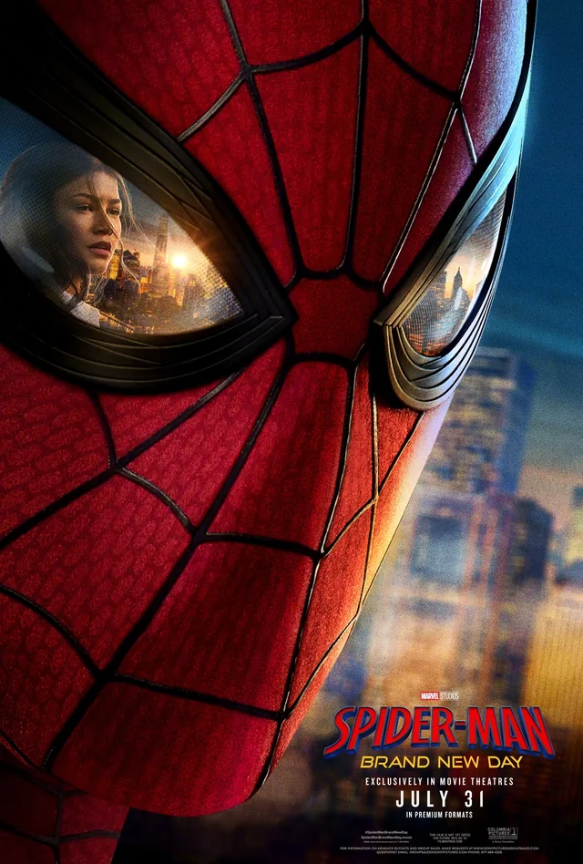

Finally seeing Brand New Day today! I haven't managed to avoid trailers, but I'm basically spoiler-free!
I went out of my way to try and catch up with Punisher stuff just for this movie. Got all the way through season 3 of
Daredevil, but I kinda lost interest once I started the actual Punisher. It's just not as interesting as Daredevil in many ways.
I may just read the plot summary. That's what I do for all Marvel projects I truly can't be bothered to watch, like Secret Invasion.
I also rewatched No Way Home..
I still think it's just OK. Has some pretty high highs, but I just don't like the idea of curing these past villians. Takes all
the wind out of this movie's sails.
I'm super hopeful for this one though! From the vibe I've picked up, this could honestly end up being my favorite
Tom Holland Spider-Man movie. Not a super high bar, but hopefully like an 8/10 Right now, it goes Homecoming -> No Way Home -> Far From Home. I'm crossing my
fingers that Daredevil or Kingpin show up for a cameo, even though I'm not caught up with Born Again. Still have no
idea what the deal with Sadie Sink is. Like, I guess Jean Grey? Feels too obvious, but maybe. I hope The Hand are more
interesting than they were in Daredevil season 2. That season was a bit of a slog to get through compared to seasons 1 and 3.
I'm pretty sure Keith David is playing someone, too? Sick. Who knows who. Exciting. Still have literally no idea who the real antagonist is,
or anything about the actual plot of the movie other than organic webs. I don't imagine it will have much effect on the MCU, these movies
never do. But maybe the post-credit scene will set up Doomsday in some insane way. MAYBE KATE BISHOP OR MS. MARVEL ARE THERE?
PLEASE DON'T SEND THEM INTO PURGATORY FEIGE!!! LET THEM LIVE! HERE WE GO!!!
I LOVE SPIDER-MAN!!!